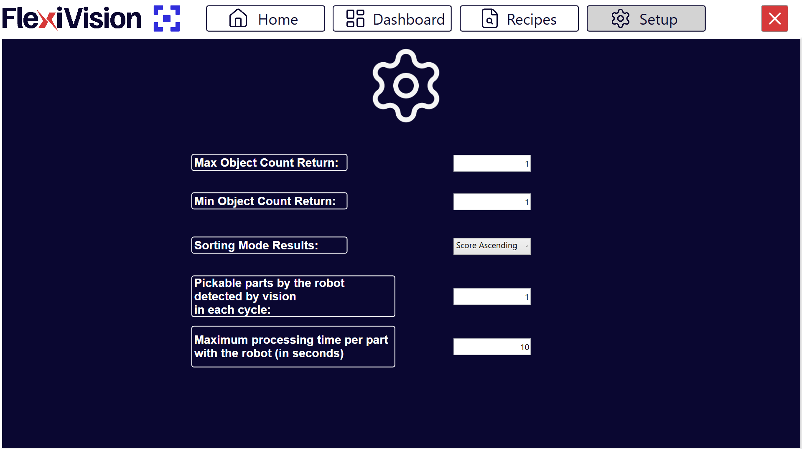

Configurazione Protocollo: Protocol Setup#
La pagina Protocol Setup permette di configurare i parametri che regolano il flusso di comunicazione e lo scambio dati tra il sistema di visione FlexiVision One e il robot. Questi parametri determinano quanti oggetti vengono inviati, come vengono ordinati, e come il sistema gestisce le statistiche e gli stati operativi.
Note
Quando configurare Protocol Setup
La configurazione di Protocol Setup è consigliata:
Durante commissioning e startup: Dopo aver completato calibrazione camera e robot
Dopo primi test produzione: Per tuning fine basato su comportamento reale sistema
Prima di produzione continua: Per ottimizzare statistiche e metriche Dashboard
Tip
Posizionamento Protocol Setup nel workflow
Protocol Setup si configura tipicamente:
Dopo: Calibrazione robot, creazione modelli
Prima: Monitoraggio produzione continua
Questo perché:
Richiede comprensione del comportamento robot (velocità, tipo gripper)
Influenza le statistiche mostrate in Dashboard
È l’ultimo step di configurazione prima della produzione vera
Una volta configurato correttamente, raramente richiede modifiche (solo se cambia robot o modalità operativa).
Accesso Protocol Setup#
Dal menu principale, accedere alla sezione dedicata al protocollo di comunicazione
Selezionare Protocol Setup
Si apre l’interfaccia con i parametri configurabili
Note
La posizione esatta del menu Protocol Setup può variare leggermente in base alla versione del software. Consultare l’interfaccia o il supporto tecnico se non immediatamente visibile.
Parametri Configurabili#
I parametri di Protocol Setup si dividono in due categorie: parametri di flusso dati e parametri statistici.

Parametro |
Descrizione e Funzione |
|---|---|
Indica il numero massimo di oggetti/coordinate che il sistema di visione può restituire al robot in una singola run. Se la visione rileva più oggetti di questo limite, ne vengono inviati al massimo questo numero, selezionati in base al criterio di ordinamento configurato (Sorting Mode). |
|
Indica il numero minimo di oggetti che devono essere rilevati in una run affinché il risultato venga considerato valido. Se il numero è inferiore a questa soglia, la run viene considerata non valida. |
|
Definisce il criterio di ordinamento con cui viene ordinata la lista degli oggetti restituiti dalla visione. Opzioni tipiche: per score, per coordinata X/Y crescente o decrescente, per distanza da un punto di riferimento. Questo parametro determina la priorità di prelievo e influisce su quali oggetti vengono inclusi nel Max Object Count Return. |
|
Pickable parts by the robot detected by vision in each cycle |
Parametro utilizzato per il calcolo delle statistiche di produzione. Indica il numero di prese effettive che il robot effettua per ogni run della visione. Esempio: se il robot preleva 2 pezzi simultaneamente con una pinza doppia, impostare valore 2. Important Non rappresenta il numero di oggetti rilevati dalla visione, ma il numero di pezzi effettivamente prelevati dal robot per ciclo. Usato per il calcolo PPM (Parts Per Minute). |
Maximum processing time per part with the robot (in seconds) |
Parametro utilizzato per statistiche e gestione del flusso di lavoro. Definisce il tempo massimo dopo il quale il sistema considera conclusa la gestione delle coordinate di una run e passa dallo stato RUN allo stato IDLE. Attention Non è un timeout di errore del robot, ma un riferimento temporale per il calcolo del ciclo e per le metriche di produttività. Influenza la visualizzazione dello stato “In Run” nella Dashboard. |
Configurazione Dettagliata Parametri#
Max Object Count Return#
Funzione: |
Limita quante coordinate vengono inviate al robot per ogni ciclo di visione. |
Valori tipici: |
Tip Come scegliere il valore:
Esempio pratico:
|
Ottimizzazione Max Object Count |
Valore troppo basso (es: 1 quando robot è veloce):
Valore troppo alto (es: 10 quando robot è lento):
Valore ottimale:
|
Min Object Count Return#
Funzione: |
Definisce quando una run di visione è considerata “successo” vs “fallimento”. |
Valori tipici: |
|
Comportamento sistema: |
|
Impatto sulla produttività |
Min Count = 1 (più permissivo):
Min Count = 3 (più restrittivo):
Regola generale: Iniziare con Min Count = 1, aumentare solo se si verificano troppi cicli con efficienza bassa. |
Sorting Mode Results#
Modalità Sorting |
Descrizione e Quando Usare |
|---|---|
By Score (Descending) |
Ordina per score dal più alto al più basso. Oggetti con migliore corrispondenza al modello vengono inviati per primi. Più comune e consigliato: Garantisce sempre prelievo dei pezzi con riconoscimento più affidabile. |
By X Coordinate (Ascending) |
Ordina per coordinata X crescente (da sinistra a destra). Utile se robot ha preferenza di picking sequenziale lungo un asse. |
By X Coordinate (Descending) |
Ordina per coordinata X decrescente (da destra a sinistra). |
By Y Coordinate (Ascending) |
Ordina per coordinata Y crescente (dal basso verso l’alto nell’immagine). |
By Y Coordinate (Descending) |
Ordina per coordinata Y decrescente (dall’alto verso il basso). |
By Distance from Center |
Ordina per distanza dal centro del FlexiBowl. Pezzi più centrali vengono inviati per primi. Utile per massimizzare stabilità (pezzi centrali meno soggetti a movimento). |
Tip
Scelta Sorting Mode ottimale
Consigliato nella maggior parte dei casi: By Score (Descending)
Vantaggi:
Massima affidabilità: robot preleva sempre i pezzi riconosciuti meglio
Riduce rischio di picking errati
Indipendente dalla posizione fisica
Alternative valide:
By Distance from Center:
Se i pezzi ai bordi tendono a muoversi durante il picking
Per massimizzare stabilità meccanica
By X/Y Coordinate:
Se il robot ha traiettorie ottimizzate per picking sequenziale
Per minimizzare movimenti robot (picking “ordinato” invece che casuale)
Raramente usato, solo per ottimizzazioni avanzate
Note
La modalità di sorting interagisce con Max Object Count. I primi N oggetti (secondo il criterio) vengono inviati.
Pickable parts by the robot - Prese robot per ciclo visione#
Funzione: |
Parametro statistico che indica quanti pezzi vengono effettivamente prelevati dal robot per ogni ciclo di visione. |
Valori tipici: |
|
Impatto su statistiche Dashboard |
Questo parametro è cruciale per il calcolo accurato di: Parts Per Minute (PPM):
Efficienza robot:
Pianificazione produzione:
Come verificare il valore corretto:
|
Maximum processing time per part#
Funzione: |
Tempo di riferimento (in secondi) che il sistema usa per determinare quando un ciclo è considerato “completato” e passare da stato RUN a IDLE. |
Valori tipici: |
|
Come calcolarlo: |
Tempo processing = Tempo medio pick&place robot × 1.2 (margine 20%) Esempio:
|
Cosa NON è: |
|
Impatto tempo processing su Dashboard |
Valore troppo breve (es: 2 secondi quando robot impiega 6):
Valore troppo lungo (es: 20 secondi quando robot impiega 3):
Valore ottimale:
|
Configurazione Ottimale per Scenari Tipici#
Scenario 1: Robot singolo, picking standard#
Tip
Configurazione consigliata
Applicazione: Robot con gripper singolo, preleva 1 pezzo alla volta, velocità media.
Max Object Count Return: 2 Min Object Count Return: 1 Sorting Mode: By Score (Descending) Pickable parts: 1 Maximum processing time: 5 secondi
**Razionale**:
- Max 2: Robot ha sempre 1-2 pezzi disponibili, nessun idle
- Min 1: Massima flessibilità, lavora sempre se c'è almeno 1 pezzo
- By Score: Garantisce picking dei pezzi migliori
- Pickable 1: Gripper singolo
- 5 sec: Tempo medio pick&place standard
Scenario 2: Robot veloce, gripper doppio#
Tip
Configurazione ottimizzata alta produttività
Applicazione: Robot veloce, gripper doppio che preleva 2 pezzi simultaneamente.
Max Object Count Return: 4 Min Object Count Return: 2 Sorting Mode: By Score (Descending) Pickable parts: 2 Maximum processing time: 3 secondi
**Razionale**:
- Max 4: Robot veloce, serve buffer di coordinate
- Min 2: Garantisce sempre almeno 1 ciclo doppio (2 pezzi)
- Pickable 2: Gripper doppio
- 3 sec: Robot veloce con cicli brevi
Scenario 3: Robot lento, alta affidabilità#
Tip
Configurazione conservativa
Applicazione: Robot lento o traiettorie lunghe, priorità affidabilità su throughput.
Max Object Count Return: 1 Min Object Count Return: 1 Sorting Mode: By Score (Descending) Pickable parts: 1 Maximum processing time: 10 secondi
**Razionale**:
- Max 1: Robot lento, non serve buffer (visione ha tempo di processare tra un pick e l'altro)
- Min 1: Permissivo
- 10 sec: Traiettorie lunghe
Procedura di Tuning Protocol Setup#
Fase 1: Configurazione iniziale (durante commissioning) |
|
Fase 2: Primo tuning (dopo primi test produzione) |
|
Fase 3: Ottimizzazione fine (produzione continua) |
|
Salvataggio Configurazione#
Warning
Salvataggio obbligatorio
Dopo aver configurato i parametri di Protocol Setup:
Verificare che tutti i valori siano impostati correttamente
Cliccare su Save o Apply (se presente pulsante dedicato)
I parametri vengono salvati nella configurazione sistema
Nota: A differenza di altri parametri che vengono salvati nella ricetta, i parametri di Protocol Setup sono tipicamente globali o associati alla configurazione della comunicazione robot.
Verificare nella documentazione specifica o con il supporto tecnico se richiedono salvataggio ricetta o sono salvati automaticamente.
Verifica Configurazione - Test validazione#
Dopo configurazione Protocol Setup, eseguire questi test:
Test 1: Ciclo singolo |
|
Test 2: Ciclo continuo |
|
Test 3: Statistiche |
|
Se tutti i test sono positivi, configurazione è corretta.
Troubleshooting Protocol Setup - Problemi comuni#
Warning
PPM Dashboard non corrisponde a realtà
Causa più probabile: Parametro “Pickable parts” errato
Verifica:
Contare manualmente pezzi prelevati in 10 cicli
Dividere per 10
Confrontare con valore impostato
Soluzione: Correggere “Pickable parts” con valore effettivo
Warning
“In Run Time” sempre attivo (non passa mai a IDLE)
Causa: “Maximum processing time” troppo lungo
Soluzione: Ridurre processing time gradualmente fino a quando sistema passa correttamente a IDLE tra un ciclo e l’altro
Warning
Robot riceve troppe coordinate (non riesce a processarle tutte)
Causa: “Max Object Count” troppo alto per velocità robot
Soluzione: Ridurre Max Count a valore realistico basato su tempo ciclo robot
Checklist Completamento#
Note
Verifica configurazione Protocol Setup completa
Max Object Count Return configurato (valore realistico per velocità robot)
Min Object Count Return configurato (tipicamente 1, o 2-3 se necessario)
Sorting Mode selezionato (consigliato: By Score Descending)
Pickable parts impostato (valore effettivo prese robot per ciclo)
Maximum processing time configurato (tempo reale pick&place × 1.2)
Test ciclo singolo eseguito con successo
Test ciclo continuo (10+ cicli) verificato
PPM Dashboard confrontato con calcolo manuale (< 5% differenza)
Configurazione salvata
Se tutti i punti sono verificati, Protocol Setup è completato e ottimizzato.
Prossimi Passi#
Una volta completato Protocol Setup, il sistema è configurato completamente per l’operatività:
→ Config FlexiBowl - Ottimizzazione movimentazione (se non già fatto)
→ Verifica Risultati (Dashboard) - Monitoraggio produzione e validazione configurazione